3 零件模型的特征分析
3.0 引言
回转类零件按照加工类型将其特征分为外环槽、外倒角、径向孔、齿轮和外螺纹等基本几何特征类型。（简单非回转零件按照加工类型将其特征分为端面、凹槽、通槽、孔、倒角和导圆等基本几何特征类型）由零件几何形状及所对应的加工方法，可以把零件的形状特征分成主特征和辅助特征。对于回转类零件来说，同样可以将其分为主特征和辅助特征。图 3-1 表示出了回转类零件的加工特征类型。当然，分类方式不是唯一的，其中有文献中是从回转类机械零件的设计、工艺角度，也就是从零件的功能、结构组成特点和零件的加工方式来定义特征体素，回转类零件可以分为外部特征、内部特征、孔系特征。外部特征和内部特征又分为两大类： 回转面类和非回转面类。回转面类外部特征可分为圆柱体素、圆锥体素、空刀体素、螺纹体素、圆柱齿轮体素、圆锥齿轮体素、链轮体素、皮带轮体素等。回转面类内部特征分为圆柱体素、圆锥体素、螺纹体素、内平键体素、内花键体素、外平键体素、外平键槽体素、端环槽体素等。非回转面类则是一个由一组特征尺寸约束的2D截面的平移扫描体。孔系特征都是回转面类，可分为光孔体素，沉孔体素、螺纹孔体素、螺钉孔体素、销孔体素等[^ 张应中]。
3.1 零件的拓扑图表达
3.1.1 特征的定义与分类
定义
特征是零件表面上具有一定形状的部分区域，代表零件的某种功能或制造方法^ 基于MBD的零件数字化工艺设计技术。一个零件在形状上是有一定数量的体积形状特征组成的，特征是零件上具有工程意义的一个实体部分。原则上一个具体特征是研究人员根据具体需要定义的，但从便于标准化和便于进行工艺设计系统的算法研究的角度，集成CAD与工艺设计系统必须识别出CAD模型中具有工程意义的制造特征，而特征识别即是对零件实体模型进行解释。
由于从不同的应用领域来认识特征和提取特征，因此出现了特征的不同定义方式[^ 童秉枢]。例如从设计角度，往往将特征与产品设计知识表示和功能要求相连，把特征定义为：“具有一定形状的实体，与一个或多个设计功能相关，可以作为基本单元进行设计和处理”。如果从制造角度，往往将特征与工艺过程设计、数控编程、自动检测相连，把特征定义为：“对应一定基本加工操作的几何形体”。在文献[^ 童秉枢]中，作者认为，为了在实践中尽可能将设计特征与制造特征统一起来。“特征是零件或部件上一组相关联的具有特定形状和属性的几何实体，有着特定的设计或制造意义。
分类
与特征定义一样，也依赖于应用领域及零部件类型。目前特征的分类也多以形状为主。具体分类形式如图2-1，2-2，2-3所示[^ 童秉枢]。
- 按几何构型的形状特征分类（如图 2-1 所示）
| 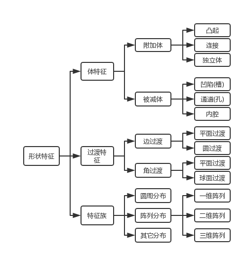 |
|---|
| 图2-1 按几何构型的形状特征分类 |
- 按类特征的形状特征分类（如图 2-2 所示）
| 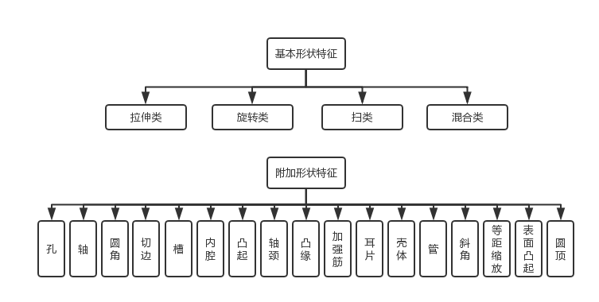 |
|---|
| 图2-2 按类特征的特征分类 |
Creo中的形状特征分类
Pro/E是典型的特征造型系统，其中形状特征的分类面向较宽的应用领域，有一定的通用性，分以下几类特征。
实体特征(solid feature)：实体特征分为基础特征和工程特征（也称辅助特征）两类，如图 2-3 所示。基础特征用来构建物体的基本形状，然后在其上添加各种工程特征，形成最终模型。
基准特征(daturn feature)：有基准面、基准轴、基准点、基准曲线和基准坐标系。基准面用于确定草绘平面、视图定位和特征定位时作为参照平面。基准轴在同轴放置或创建径向阵列时用于参照。基准点用于构建基准平面、基准轴与基准曲线等。基准曲线用于创建二维剖面、扫描特征的轨迹线及构建曲面特征的边线等。
曲面特征(surface feature)：用于创建各种复杂的曲面，可分为拉伸曲面、旋转曲面、扫描曲面、混合曲面和螺旋扫描曲面等。
修饰特征(cosmetic)：如喷印、螺纹等。
用户定义的特征(UDF)：这类特征由用户自定义，或来自特征库。
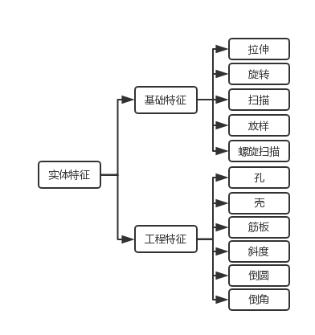
广义特征分类
机械产品加工特征分类，可分为五类特征，其中包括形状特征、材料特征、精度特征、制造资源特征[^胡文伟]。
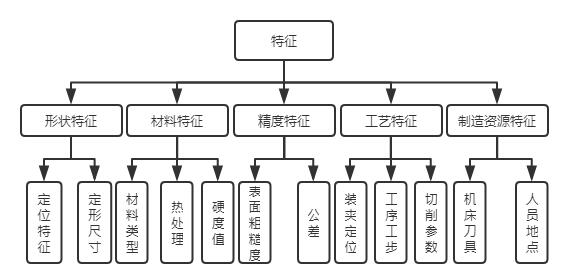
形状特征描述产品的几何形状、尺寸和其他相关信息；材料特征指与零件材料特性和热处理工艺方面的内容；精度特征描述零件的尺寸公差、形位公差及表面粗糙度等京都信息；工艺特征指在加工过程中指导生产的的加工工艺规划的相关信息；制造特征描述生产加工过程中所需要的制造资源情况。
3.1.2 几种拓扑结构图
边的凸性(convexity)
ACIS系统中中将边的凸性分为10种类型，分别用值0-9分别表示为未定义凸性(undefined convexity)、凸混合(convex blend)、凹边(concave)、光滑凸起(smooth convex)、光滑凹陷(smooth concave)、光滑(smooth)、凸尖(convex cusp)、凹尖(concave cusp)、尖(cusp)、未设置(unset)这十种类型。表3-1中列出了几种常见的边类型。
| 序号 | 举例 | 凸性(convexity) |
|---|---|---|
| 1 | convex blend | |
| 2 | concave | |
| 3 | smooth convex | |
| 4 | smooth concave | |
| 5 | smooth |
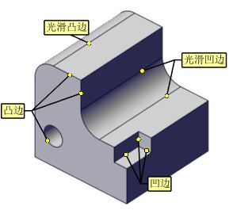
凸凹性判定方式
对直线边，假设两平面$$f_1$$，$$f_2$$相交于边$$e$$，两平面的法矢分别为$$n_1$$，$$n_2$$，任选一面作为基准面，假如$$f_1$$作为基准面，则通过右手螺旋定则确定相交边$$e$$的方向向量为$$n_e$$ ，则令面$$f_2$$的切向量$$n_t=n_e × n_1$$，则$$ n_1 $$和$$ n_t $$之间的夹角为$$θ$$，若满足$$\begin{vmatrix}θ\end{vmatrix}<\frac{π}{2}$$时，$$e$$为凹边，当$$\frac π 2<θ<\frac{3π}{2}$$时，$$e$$为凸边，$$\begin{vmatrix}θ\end{vmatrix}=\frac{π}{2}$$时，$$e$$为切边或尖角边。$$θ+ = \fracπ 2$$时，$$e$$为切边，$$θ- = \fracπ 2$$时，$$e$$为尖角边。如图 3-1(a)所示。
当两面相交形成平面曲线时，判定方法类似，假设柱面$$f_1$$，平面$$f_2$$相交于边$$e$$，两面的法矢分别为$$n_1$$，$$n_2$$，任选一面作为基准面，假如$$f_1$$作为基准面，则通过右手螺旋定则确定相交边$$e$$的方向向量为$$n_e$$ ，则令面$$f_2$$的径向向量$$n_t=n_e × n_1$$，则$$ n_1 $$和$$ n_t $$之间的夹角为$$θ$$，若满足$$\begin{vmatrix}θ\end{vmatrix}<\frac{π}{2}$$时，$$e$$为凹边，当$$\frac π 2<θ<\frac{3π}{2}$$时，$$e$$为凸边，$$\begin{vmatrix}θ\end{vmatrix}=\frac{π}{2}$$时，$$e$$为切边或尖角边。$$θ+ = \fracπ 2$$时，$$e$$为切边，$$θ- = \fracπ 2$$时，$$e$$为尖角边。
如图 3-1(b)所示：
| 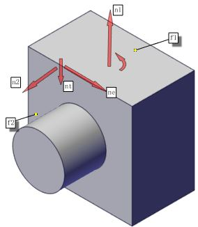 | 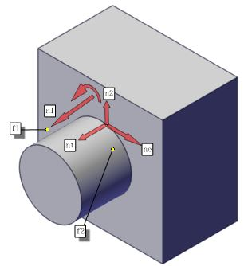 |
|---|---|
| 图 3-1(a) 直线边 | 图 3-1(b) 曲线边 |
属性邻接图(AAG)
在三维几何特征模型中，CAD模型对精度的要求非常严格，一般采用B-Rep模型来表示。如前一章节，B-Rep模型由三种几何信息：点(Point)、线(Curve)、面(Surface)以及三者之间相互联系的拓扑信息共同构成边界表示的基本元素。把零件几何信息与其点线面之间的连接拓扑信息结合起来，就可以很准确的描述出三维实体在空间中的形状、位置以及大小。
属性邻接图(Attributed Adjacency Grap, AAG)是一种用于描述零件几何拓扑信息的图结构，是特征识别的基础，Joshi和Chang[^ Joshi]率先提出将零件特征都用AAG来表达，它用无向图来定义一个特征，图结构中包含面(Surface)、边(Edge)、邻接信息(Adjacency Info)和属性信息(Attributed Info)，提出通过特征与零件的AAG图模式匹配来进行特征识别。
定义为图$$G=<V,E,A>$$，其中$$V$$表示节点的集合，对于零件的每个表面$$f_i$$都有唯一的节点与之对应；$$E$$表示边的集合，对于零件的每两个相邻表面$$f_i,f_j$$都有唯一的连接边与之对应。$$A$$表示特性属性集，和$$E$$中的每一条边$$e_k$$对应，如果$$e_k$$连接的两个面形成凹连接，就用$$ e_k=0 $$表示，用$$ e_k=1 $$表示凸连接。首先用邻接矩阵来表示属性邻接图中面节点和边的拓扑关系，将所有顶点的信息组织成顶点表，利用一个矩阵来表示各顶点之间的邻接关系，然后根据CAD模型的几何拓扑信息，定义相应的面和边的属性，面的属性信息包括面类型、面的方向、凸凹性等，边的属性包括曲线类型、凸凹性等。图3-2表示一个回转类零件CAD模型及其属性邻接图。
| 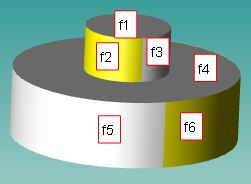 | 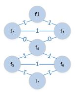 |
|---|---|
| 图 3-2 简单回转体 | 图 3-3 属性邻接图 |
扩展属性邻接图(EAAG)
属性邻接图(Attributed Adjacency Grap, AAG)可以表达特征面的拓扑结构，表示边的凸性，而识别相交特征时仅凭借这些信息是不够充分的。为了有效地进行特征识别，对属性邻接图中的顶点和边进行扩展，采用扩展属性邻接图(Extended Attributed Adjacency Graph, EAAG)来进行描述，但根据不同的应用场景，往往使用不同的扩展属性[^ Gao S M][^ 刘文剑]。零件、毛坯和特征都用EAAG表示，可以很容易从三维模型中B-Reap中得到EAAG图[^ 陶松桥]。

加工面邻接图(MFAG)
加工面邻接图(Manufacturing Face Adjacency Graph)是零件的扩展属性邻接图(Extended Attributed Adjacency Graph, EAAG)去除毛坯面或凸壳面后产生的EAAG子图[^ Gao S M]。即是把零件扩展属性邻接图中的权值为$$1$$的边断开后所得到的多个独立的特征子图，这些子图就是加工面邻接图。由于传统机械加工工艺大多都是减材制造，去除毛坯表面多余的材料从而形成加工特征，此时特征面之间的关系体现为凹连接，此时表现为独立的加工特征，可以通过这种方式可以识别零件上相对比较独立的加工特征。但是，当特征之间出现交互时，此时MFAG中将会出现凸连接，该方法对特征的识别不太利好。往往还需要对MFAG图进行分解。如何将含有凸连接的MFAG分解为多个不包含凸连接的MFAG子图。文献[^ 陈永府]中给出了一种分解方式。
最小条件子图(MCSG)
将含有凸连接的MFAG分解成仅含凹连接的所得到的图结构作为最小条件子图(MCSG)[^ Gao S M]。是零件属性邻接图中对应该特征的最大子。由于特征之间存在交互性，使得原有特征遭到破坏，相应的在零件的属性邻接图中原来独立的完整特征也遭到破坏，使得余下特征仅仅是原特征的部分子图。通过最端路线修复被破坏的属性邻接图，从而得到的可以完整表达加工特征的子图称作最小条件子图(MCSG)。
邻接矩阵(Adjacency Matrix)
邻接矩阵是表示顶点之间相邻关系的矩阵。设G=(V,E)是一个图，其中$$V={v_1,v_2,…,v_n} [1] $$ 。G的邻接矩阵是一个具有下列性质的n阶方阵[^ 百度]：
- 对无向图而言，邻接矩阵一定是对称的，而且主对角线一定为零（在此仅讨论无向简单图），副对角线不一定为0，有向图则不一定如此。
- 在无向图中，任一顶点i的度为第i列（或第i行）所有非零元素的个数，在有向图中顶点i的出度为第i行所有非零元素的个数，而入度为第i列所有非零元素的个数。
- 用邻接矩阵法表示图共需要n^2^个空间，由于无向图的邻接矩阵一定具有对称关系，所以扣除对角线为零外，仅需要存储上三角形或下三角形的数据即可，因此仅需要$$\frac{n(n-1)}{2}$$个空间。
在特征识别中，用带权值的无向图表示的邻接图可以用特征矩阵的形式表示。
3.2 回转类零件加工特征
3.2.1 典型回转结构
回转体零件通常以直线、多段线或曲线作为母线，然后绕一条旋转轴旋转形成的零件，如轴、盘、操作柄、球杆、滑轮、滚轮等。回转类零件一般包含沿轴线分布的构成零件主体的若干特征，这些特征可以细分为基本特征和辅助特征，基本特征是指用于构造零件总体集合结构的特征，如外螺纹、外圆面、外曲面等；附着在基本特征上的特征称为辅助特征，如倒角、环槽、键槽、辅助孔等。
回转体几何轴线与回转轴线重合，且垂直于回转轴线的横截面均为圆形或环形，或两者的组合带有铸锻或焊接的加强筋轮辐叶片减重孔的零件，例如泵轮风机叶轮等；带有机械加工形成的平面沟槽花键齿形等功能要素的零件，例如齿轮花键轴传动丝杠等；以及起连接紧固作用的螺栓螺母直管接头类零件，如方头螺栓六方螺母等均可作为回转件。除此之外，回转类零件也包括平面、斜面、型面、加强筋、槽腔、开口、孔、下陷、凸台等非回转结构特征。当然，对于以上特征，不是所有的复杂回转类零件都包含这些结构，但一定都包括回转特征和非回转特征。
| 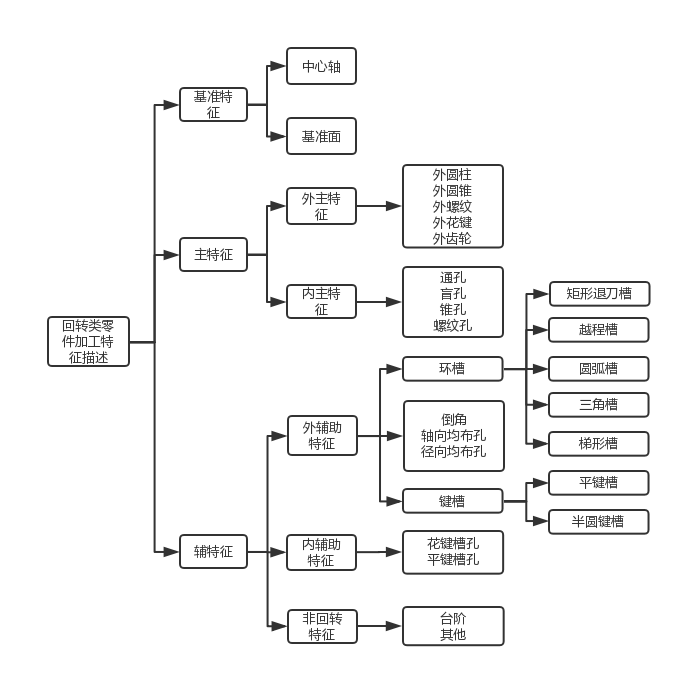 |
|---|
| 图3-1 回转体零件的加工特征 |
3.2.2 回转类零件的结构特点
回转体的加工特征很多是机床上加工形成，由车刀的横向和纵向进给来控制车削或铣削进给量，从而控制表面材料的去除量，进而形成回转体加工表面特征。比如，当加工轴时，通过车削或铣削可以形成端面，环面，锥面，柱面，曲面等表面轮廓。进而可以组合形成中心孔、台阶、环槽、退刀槽、越程槽、螺纹、轮齿等特征。以上特征的共性就是轮廓线绕回转轴线生成加工特征。当然，孔特征其中又可以细分成通孔、盲孔、沉头孔、埋头孔。基于回转件是回转特征与非回转特征的综合体，可以把轴套类、盘盖类均视为回转结构。
轴是组成机械设备的重要零件，它支撑着其它转动体回转并传递扭矩，同时它又通过轴承与机架连接。所有轴上零件都围绕轴心线做回转运动，形成一个以轴为基准的组合体──轴系部件。轴类零件结构组成中具有许多外圆、轴肩、螺纹、螺尾退刀槽、砂轮越程槽和键槽等。外圆用于安装轴承、齿轮、带轮等；轴肩用于轴上零件和轴本身的轴向定位；螺纹用于安装各种锁紧螺母和高速螺母；螺尾退刀槽供加工螺纹时退刀用；砂轮越程槽用于完整磨削出外圆和端面等；键槽用来安装键，以传递扭矩[^ 魏杰]。
相对而言，套类零件结构较简单。套类零件是机械及传动过程中的重要零件，其结构对功能有着重要影响。套类零件是指回转类零件中的空心薄壁件，是机械加工中广泛应用的一种零件，主要起支撑和导向作用。由于套类零件功用不同，结构和尺寸也千差万别。常见的套类零件有支撑回转轴的各种形式的轴承圈、轴套；夹具上的钻套和导向套；内燃机上的气缸套和液压系统中的液压缸、电液伺服阀的阀套等。
盘盖类零件是由多个端面、深孔、曲面及外轮廓合成的结构相对复杂的零件，广泛应用于具有支撑和连接作用的场合。在机械零件中占有很大的比重，广泛用于机械设备中，在机械设备的运行中发挥重要作用，不同的盘类零件虽然在尺寸和精度要求方面有所差异，但也有很多的相似之处。盘类零件主要由端面、内孔及外圆等组成，通常盘类零件直径大于其轴向尺寸，长径比较小，比如齿轮、法兰盘及轴承环等。盘类零件主要用于传递动力、转换方向或起轴向定位和密封作用。为加强支撑强度，盘类零件上常设有凸台，凹坑等特征，除此之外，为与其他零件连接，盘类零件上还常设有键槽和各种孔(光孔、沉孔、螺纹孔)等结构[^ 来逢亮]。
| 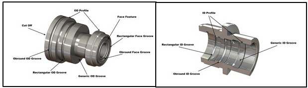 |
|---|
| 图3.2 一般回转特征 |
| 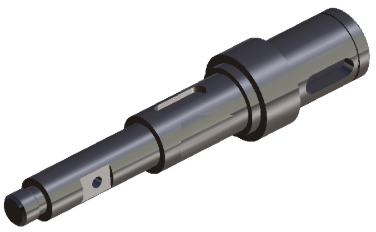 |
|---|
| 图3.3 轴件 |
| 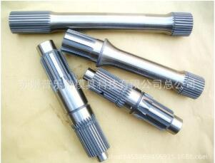 | 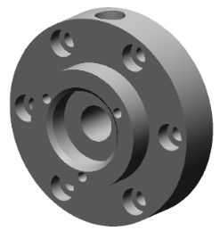 |
|---|---|
| 图3.4 花键轴 | 图3.5 盘盖 |
3.2.3 回转类零件的加工方法
复杂回转件通常既具备简单回转特征和非回转特征，往往是二者的综合体。其结构体素和加工方法自然也包含回转件和非回转件的加工方法与加工特征。根据回转类零件的结构特点，主要由零件加工特征来决定相应的加工方法：
孔
孔特征在任何类型的机械零件上都必不可少，它起着重要的连接、定位、减重、装配作用。根据孔是否贯穿实体将孔分为通孔和盲孔；根据形状又可以分为轴孔、直孔、斜孔；根据孔的用途分为连接孔、导向孔、装配孔、基准孔、工艺孔等类型；孔通常采用钻削加工，精度要求不高。当精度要求高时采用钻、扩、绞的的加工方法；对于较大尺寸孔时常采用镗或铣加工；面对长径比很大的孔，就不得不采用特殊的加工方式，比如用深孔钻来加工此类孔。和外圆相比，孔的加工难度较大，所使用的刀具的直径、长度和安装等都受到被加工孔尺寸的限制。因此，加工同样精度的内孔和外圆时，孔加工比较困难，往往需要较多的工序。孔加工方法较多，常用的有钻孔、扩孔、铰孔、镗孔、拉孔、磨孔、研磨孔、珩磨孔、滚压孔以及各种孔的光整加工和特种加工。
外圆
作为回转体零件的主要的结构特征，是复杂回转类零件的加工设计基准，一般采取车削的方法，对精度等级要求高时，如液压杆的加工，要采用磨削和超精加工。轴套类、盘类零件是具有外圆表面的典型零件，外圆表面常用的机械加工方法有车削、磨削和各种光整加工。车削加工是外圆表面最经济有效的加工方法，但就其经济精度来说，一般适于作为外圆表面粗加工和半精加工方法；磨削加工是外圆表面主要精加工方法，特别适合各种高硬度和淬火后零件的精加工；光速加工是精加工之后进行的超精密加工方法（如滚压、抛光、研磨等），适用于某些精度和表面质量要求很高的零件。
内圆
内圆也是回转体零件的主要结构特征之一，通常和外圆同心，对于此类特征，采用钻和镗的方法加工的较多。和外圆加工类似，高精度的内圆可以使用内圆磨削、珩磨和研磨等超精加工方式。
环形槽
环形槽是位于外圆或内孔之间的环形沟槽，分为退刀槽、越程槽、密封槽等，一般采用车削加工。在车床加工中，如车削内孔或螺纹时，为了便于退出刀具并将工序加工到毛坯底部，常在待加工面末端预先制出方便退刀的空槽，称之为退刀槽[^ 百度学术]。为保证在装配时与相邻零件保证装配准确，在轴肩处应加工出退刀槽。越程槽是在孔的底部加工出的环形沟槽，由于砂轮的回转柱面和端面之间有个圆角，并且这个角度难以精确控制，并且不稳定，在需要磨台阶轴的外径和台阶端面时，侧面与底面夹角处无法磨削到，于是就在外径和台阶相交处将外径和台阶相交处将外径和台阶根部各车去一些，形成一个槽，这就是砂轮越程槽。在车削加工中这种沟槽被称作退刀槽，在磨削加工中叫砂轮越程槽。
螺纹
根据螺纹类型的不同，主要起着连接、紧固、密封作用。主要采用车削、铣削、攻丝、套丝、磨削、研磨和旋风切削等，复杂零件上的螺纹还可以通过数控铣加工。螺纹滚压是一种无切削螺纹加工工艺，螺纹是靠成形滚压模具是零件毛坯表层产生塑性变形而形成的。螺纹滚压一般在滚丝机、搓丝机或在附装自动开合螺纹滚压头的自动机床上进行，适用于大批量生产标准紧固件的其它螺纹联接件的外螺纹。滚压一般不能加工内螺纹，但对材质较软的工件可以用无槽挤压丝锥冷挤内螺纹，原理和攻丝类似，所需扭矩大但加工精度较之高。
加强筋
加强筋在盘盖类零件中出现的较多，主要起增加零件的结构强度，提高结构稳定性的作用。回转类零件上的加强筋形状主要是直壁，也有弧形和具有一定角度三维加强筋。可采用3轴、4轴或5轴数控加工，也可采用普通铣床加工。
型腔
型腔是位于零件非回转区域的槽式结构，又叫凹模，是成型塑件外表面的工作零件，其深度大于零件的过渡角半径。其侧壁有开角、闭角、直角等形式，也有侧壁是凹槽结构。可采用3轴、4轴、5轴数控加工中心加工，也可采用普通铣床加工。
凸台
对于复杂回转体的凸台多数位于外圆、辐板或加强筋板上，在主体基面上凸起的一部分结构。凸台的主要作用是连接、止动、加强孔边等。凸台的加工方式可采用3轴、4轴、5轴数控加工，同样可采用普通铣床加工。
下陷
当型腔的深度较小。通常小于或者等于零件的填角半径，所形成的凹陷特征叫做下陷。下陷是盘类零件上常见特征。可采用3轴、4轴、5轴数控加工，也可采用普通铣床加工。
轮齿
齿轮是机器、仪表中使用最多的重要传动件，齿轮种类很多，齿形形状也各有不同，轮齿是最为复杂的一种加工特征，常用的是渐开线齿形和圆弧齿形，圆弧线齿形又分为单圆弧齿和双圆弧齿两种齿形。齿轮齿形加工分为无屑加工如：冷挤、精锻、轧制等，有屑加工如： 铣齿、拉齿、滚齿、插齿、刨齿、磨齿、剃齿、珩齿等。各种圆柱齿轮和锥齿轮的齿形部分可用切削加工或精密铸造、精密锻造、挤压、粉末冶金等方法制造。齿轮的切削加工按齿形部分的成型方式，有成形法、仿形法和展成法等。
花键
花键分为内花键和外花键，其按键齿形状又分为矩形花键和渐开线花键。花键是花键轴上的典型回转类零件加工特征。在花键轴中有纵向的键槽，和轴配合的旋转件上对应也有内花键，可保持与轴的同步旋转。起着传递机械扭矩，保证良好的对中性的作用。矩形花键轴应用广泛，渐开线花键轴用于载荷较大的，定心精度要求较高及尺寸较大的连接。矩形花键通常应用于飞机、汽车、拖拉机、机床制造业、农业机械及一般机械传动等装置。由于矩形花键轴多齿工作，承载能力强，对中性和导向性也很好，较浅的齿根可以使应力集中小。其次，花键轴的轴与毂强度削弱小，加工比较方便，用磨削方法可以获得较高的精度。渐开线花键轴用于载荷较大，定心精度要求高，以及尺寸较大的场合。其特点是齿廓为渐开线，受载时齿上有径向力，能起自动定心的作用，使各齿受力均匀，强度高寿命长，加工工艺与齿轮相同，易获得较高精度和互换性[^ 刘志奇]。花键轴的加工工艺方法分为切削加工和塑性成形两大类。塑性成形是通过原材料的塑性变形获得零件的形状，常常在室温条件下采用冷体积成形工艺，直接加工出最终零件。获得齿形的方式有铣齿、刨齿、滚齿、插齿、磨齿等多种加工方式。在渐开线花键轴体积冷精密成形工艺中，已经研究开发出了花键轴冷挤、冷搓、冷打、冷滚压等新工艺[^ Dixit]。
3.3 回转类零件的工程应用
在机械制造业中，回转类零件，如： 轴、盘、轮、套、齿轮等占有非常大的比重，这些类中的每一类又可以进一步分成若干子类，如此类推，它们在机械设备中发挥重要作用，可以说，凡是动力传动机构或系统都需要回转件。据统计，在机械设计图样中，回转类零件约占零件总数的70%以上[^ 司尧华]。广泛应用于工业领域、汽车制造领域、航空航天领域、精密机械与仪器等多个领域，发挥不可替代的作用。(随着现代工业的发展，对回转类零件的要求变得更为严格，引进超精密设备固然可以获得一定的加工精度，但同时能够准确描述回转类加工特征信息，也是尤为重要的)。
3.4 加工特征识别分析
3.4.1 通用特征的识别分析
回转类零件中，通用特征包含过渡特征、通孔、盲孔、复合孔、通槽、平键槽、2D开放型腔、3D型腔、台阶、凸台。这些通用特征不仅广泛用在回转类中，在箱体类、插架类零件中也非常常见，在特征识别技术不断发展的过程中，很多学者对它们进行了较为全面的研究，取得了丰硕的成果。
对过渡特征来讲，对其进行的特征识别是以复杂零件过渡特征的抑制为目的的。主要是为了简化模型，去除辅助特征，而重点研究主要特征。过渡特征是对应抑制后零件的同一边、点的过渡面的集合。因此过渡特征的识别过程就是对零件中过渡面的组合的过程，它以零件中的所有过渡面及其属性作为输入，输出包含所有过渡特征的动态数组[^ 崔秀芬]。孔特征拓扑结构简单，可识别性高，基于规则和属性邻接图的的方式可以对通孔、盲孔、复合孔进行有效的识别。对于槽特征，其特征都有固定数量与特定位置关系的几何体，由面和边缘组成，其表面类型分为平面，圆柱面、锥面、球面。边的类型有直线、圆弧。表面间的过渡方式分为相切过渡、垂直过渡、角度过渡。通过分析这些几何体数据可以建立起加工特征的知识库。型腔在回转体中较少，但在一些复杂的回转类零件中也会遇到。
| 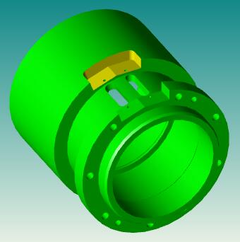 | 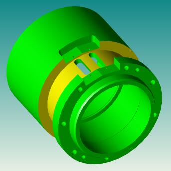 | 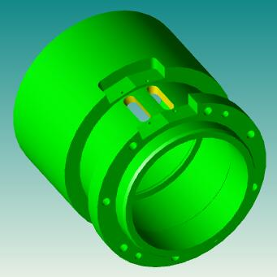 |
|---|---|---|
| 图 2.6 开口槽 | 图 2.7 环槽 | 图 2.8 通槽 |
| 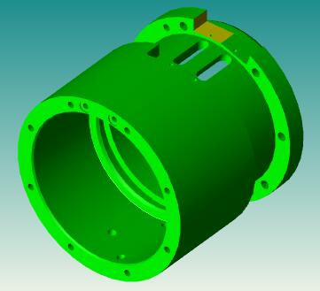 | 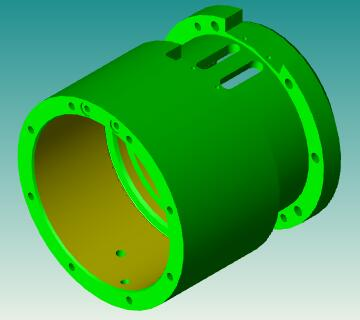 | 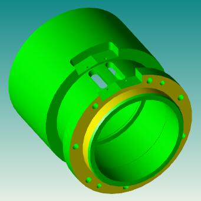 |
| 图 台阶 | 图 孔 | 图 凸台 |
对通用特征的识别，识别某一个特征相对比较容易，我们可以通过图分解和图匹配理论以及基于规则等特征识别方法将该特征识别出来，但当面对的是具体的生产实践时，对特定特征制定的识别规则就很有可能失效或出现识别规则冲突的种种问题。因此，能够对通用特征制定一套统一的识别标准是比较规范的解决方式。本文后面章节将会逐步探讨对通用特征识别研究。
重点论述各个不同建模工具的几何解析模式（面的表示方式）。。。
3.4.2 固有特征的识别分析
回转类零件中，固有特征包括径向孔、中心孔、内外环槽、内外退刀槽、交互环槽、内外花键、内外螺纹、内外齿槽、加强筋等。本文以回转类零件的特征为研究对象，重点研究回转类中最具有代表性的加工特征。其中，回转体中的槽特征最为常见，无论是退刀槽、越程槽还是其它密封槽等特征均具有重要的应用范围。孔特征也是最为常见的特征之一，回转件中，中心孔是在轴的端部，在加工过程中，起轴端支撑的作用。图 2.1是本文主要研究的回转特征。
| 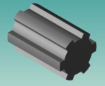 | 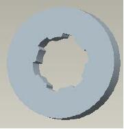 | 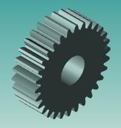 |
|---|---|---|
| 外花键 | 内花键 | 齿轮 |
| 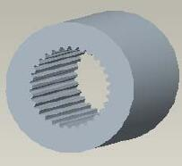 | 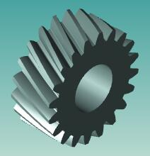 | 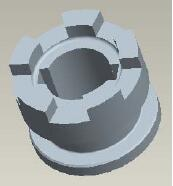 |
| 内花键 | 斜齿轮 | 均布槽 |
| 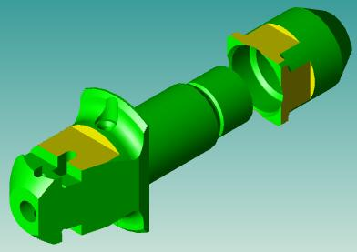 | 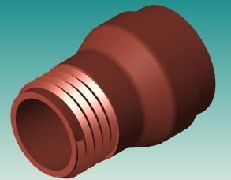 | |
| 环槽 | 铣扁 | 外螺纹 |
3.4.3 交互特征的识别分析
当两个独立加工特征之间产生布尔减或布尔增运算时，此时的特征将会呈现某种交互性。出现像面的分割、连接边丢失、连接面丢失、环数增加等问题。这些在交互特征识别时遇到最多。回转件中，交互特征体现在槽之间的交互(图 2.4.1)，孔之间的交互(图 2.4.2)以及孔与槽(图 2.4.3)之间的交互。
| 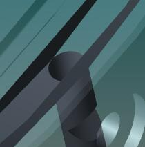 | 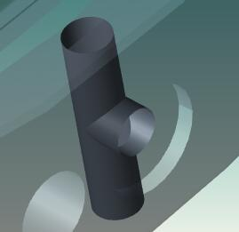 | |
|---|---|---|
| 图 2.4.1槽-槽 | 图 2.4.2 槽-孔 | 图 2.4.3 孔-孔 |
前面章节提到，当多个独立特征发生交互时，会使得加工面邻接图出现凸连接，从而部分原有特征会丢失，本来的完整面可能被凸连接分割开来，使特征识别的难度增加。
3.5 本章小结
本章通过对零件特征的分析，首先介绍了特征识别时常用到的几种特征拓扑图以及广义的特征定义及分类，然后详细研究了回环类零件的结构特点和加工方法，阐述了不同加工特征的切削加工方法。最后针对本文要研究的回转类零件的加工特征识别方法，对回转类零件通用特征、固有特征及交互特征的特征识别问题进行了大致的分析。
4 回转类零件特征识别算法研究
4.0 引言
当前机械制造领域，零件的结构复杂程度和对零件特征的加工工艺是处于两端的。也就是说，能够对一个复杂零件做出准确、精细而完整化的工艺表达是现今机械领域的最新要求。机械特征识别技术就是实现该要求的重要方式之一。本章主要以回转类零件为例，分析回转类零件特征识别的算法思维，研究回转类零件的典型加工特征识别方法，提出回转类零件相似性特征识别方法，解决回转类零件以往很少研究的几个加工特征自动识别的问题。
4.1 轴类零件特征识别
轴类零件的特征识别通常是基于体分解的方式，通过研究最大切削体的体表示方法来研究轴类的加工特征。本文通过对轴类属性邻接图的二次分解，将轴类特征按照主辅特征分类，然后与建立的特征库进行特征库的匹配，达到识别的目的。如前面章节所述，轴类零件加工特征，既包含回转特征，又包含非回转特征，按照主辅特征的分类方式，可以对轴上特征进行特征分解，将分解后的特征拓扑信息与特征库进行匹配， 匹配成功时记录该特征，失败时，将该特征标记为其它特征，最后输出轴上所有特征的匹配识别结果。
4.1.1 环槽特征识别算法研究
首先，分析轴类零件特征-槽特征；尽管槽特征简单，但是由于加工过程的灵活性，再加上为满足不同场合的使用要求或功能而对槽的特征识别带来了很多不确定因素而产生的模糊性识别，以往的特征识别仅仅局限知道该特征是个槽特征，但是至于是什么类型的槽特征就不得而知了。从而把一些重要的属性信息给丢掉了，为简化特征模型带来拓扑信息的不确定性，不利于模型轻量化工艺方法的研究。表4-1总结了典型的九种常见的槽特征类型，并对其定义了唯一的编码标识，能够唯一地定义加工特征类型。
| 编码 | 名称 | 槽特征 | 属性 |
|---|---|---|---|
| S0000 | 矩形环槽 | 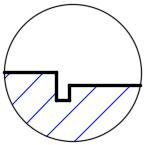 | 面类型：平面、柱面 环数：3 |
| S0001 | 梯形槽 | 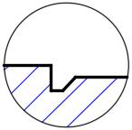 | 面类型：平面、锥面、柱面 环数：3 |
| S0010 | 减压槽 | 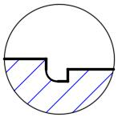 | 面类型：平面、柱面、环面 环数：3 |
| S0011 | 卸载槽 | 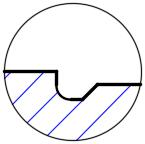 | 面类型：平面、柱面、锥面、环面 环数：3 |
| S0100 | U形沟槽 | 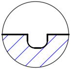 | 面类型：平面、柱面、环面 环数：3 |
| S0101 | 下凹 | 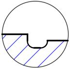 | 面类型：平面、柱面、环面 环数：3 |
| S0110 | 凹陷 | 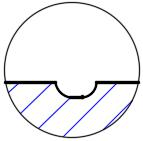 | 面类型：柱面、环面 环数：3 |
| S0111 | 球形端槽 | 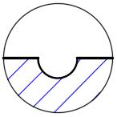 | 面类型：圆环面 环数：3 |
| S1000 | 密封槽 | 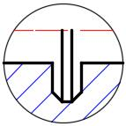 | 面类型：平面、柱面、锥面 环数：3 |
很容易得到，对于环槽这类特征，无论其截面怎么变化，其特征中环的数量始终是3，其特征面可以通过平面、柱面、锥面、环面任意形式的组合而成的。可以为此类特征建立标准化特征库，而后进行加工特征的图匹配，最终识别出该槽特征。对特征编码便于对特征进行惟一性的标识，可以用字母表示主辅特征，用数字号表示该特征下的具体特征，比如用字母S表示槽特征，用二进制编码对每一种具体特征制定序号。分别用S0000、S0001、S0010、S0011、S0100、S0101、S0110、S0111、S1000表示表4-1中的九种特定的环槽特征。类似同样的编码规则，用字母C(chamfer)表示过渡倒角，用字母F(filter)表示过渡圆角，字母B(boss)表示凸台，字母H(hole)表示孔，字母M(main)表示主特征，字母G(gear)表示齿轮示等。
| 编码序号 | B | C | G | F | H | M | S | T |
|---|---|---|---|---|---|---|---|---|
| 0000 | 凸台 | 内倒角 | 直齿外齿 | 内圆角 | 通孔 | 平面 | 矩形环槽 | 通槽 |
| 0001 | 外倒角 | 直齿内齿 | 外圆角 | 盲孔 | 圆柱面 | 梯形槽 | 2D型腔 | |
| 0010 | 斜齿外齿 | 螺纹孔 | 球面 | 减压槽 | 开放型腔 | |||
| 0011 | 斜齿内齿 | 轴孔 | 卸载槽 | 平键槽 | ||||
| 0100 | 阵列孔 | U形沟槽 | 花键槽 | |||||
| 0101 | 样条孔 | 下凹 | 外螺纹 | |||||
| 0110 | 径向孔 | 凹陷 | 丝杠槽 | |||||
| 0111 | 中心孔 | 球形端槽 | 3D型腔 | |||||
| 1000 | 密封槽 | ~ |
可以说，槽特征是回转类零件中占比很大的一类加工特征。回转类零件中通过去除材料所得的特征在某种程度上均可视为槽特征。毕竟，减材制造在现阶段机械加工领域发展最为完备，再加上大多数回转类零件的毛坯都是棒料，是通过车铣钻磨镗复合加工工艺而得到的零件最终形态。但是，当零件复杂程度高，加工难度大时，特征之间的耦合性将会得到增强，为此，为使特征之间的耦合性更加松散，本文将回转类零件加工特征用特征表的形式定义每一种特征类型，如表 4-2 所示。
1 | st=>start: 程序开始 |
4.1.2 齿轮齿槽识别算法研究
齿廓特征是机械零部件中最为复杂的形状特征之一，因为涉及曲面加工，由前面章节所讲，生产中最常用的齿轮是渐开线齿轮，尽管渐开线具有较好的几何特性，可以使用滚齿、铣齿、插齿等多种加工方式，但其关键是对刀具的精度要求高，这样才可以使用齿轮范成原理加工出满足精度要求的齿形。归根结底，对齿轮加工特征的识别实际上就是识别加工特征面上的齿间槽特征，并且同一齿轮上的齿特征应该是一模一样的，问题是使用一种算法能够快速并准确识别齿轮上的所有齿槽特征。
对齿轮齿廓的特征识别研究较少，在参数化建模过程中，对齿的生成是根据齿廓特征参数拉伸生成齿特征。在加工过程中从三维模型中很难获取到加工信息参数，往往从建模工具的参数变量中查找或从二维工程图纸中获取，除此之外，还受到人自身的影响，在大量数据中获取有用信息的过程人是比较容易犯错的，不利于指导加工生产过程。如果能够对齿廓特征进行特征识别，将所需要的加工特征识别出来，实时与人或机器进行交互并输出其工艺信息。这将大大减少零件的废品率，提高加工生产效率，提高MBD工程化应用能力，提升齿轮齿廓加工工艺，简化零件特征描述，缩短三维模型加载所需要的时间。
首先，获取属性邻接图，通过遍历所有的特征子图，找到能和齿槽特征图相匹配的特征结构。该类特征分解后可以看成由两个渐开线啮合面和一个柱面组成(暂时不考虑过渡特征)，且所有的齿槽特征中的柱面均位于同一个齿底圆上，其半径是确定的，因为该半径是齿底圆半径，所以我们便可以把所有的齿槽组合成一个完整的齿轮齿廓加工特征。具体的算法思想如下：
1 | st=>start: 模型导入 |
4.1.3 花键特征识别算法研究
在特征识别工程项目中，比较多的加工特征是以一种复制加工特征集的形式出现，即在同一工序中可以直接加工成型的特征，本文把它统一叫做复制加工特征集。对矩形花键，其基面和两侧面的几何关系是相互垂直的，且基面在同一个回转面上。除此之外，把花键特征视作在同一回转面去除表面材料后所得到的沿径向均匀分布的特征。这就和齿轮加工特征有点类似了，花键特征的识别就是要把一组满足特定几何约束和特定形状特征的键槽特征(复制加工特征集)作为一组特征而进行的高效有序的识别过程。 现在有两个问题需要注意：
- 如何识别不同种类的花键槽。
- 怎样把多个相同的花键槽统一表示。
- 如何能够简化特征识别过程，提升该类特征的识别速度。
针对上面三个问题，本文做了大量的研究。矩形花键和渐开线花键的轮廓是不同的，针对不同类的花键槽，其特征基面组成稍有不同。对矩形花键，其特征基面包括平面和过渡面，参见图4-3[^ 梁旭坤]；对渐开线型花键，特征基面包括二次曲面和过渡面。还有一点至关重要，内外花键的加工特征区别较大，参见图 4-4。
| 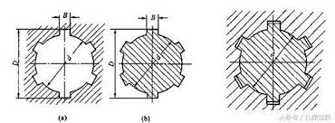 | 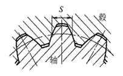 |
|---|---|
| 图 4-3 矩形内外花键 | 图 4-4 渐开线内外花键 |
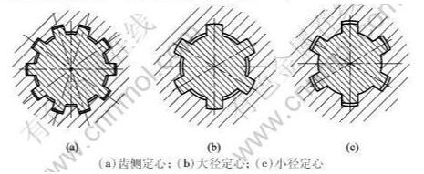
4.1.4 螺纹特征识别算法研究
4.1.5 筋板特征识别算法研究
4.2 盘盖类零件特征识别
4.2.1 型腔特征识别算法研究
4.3 基于混合特征识别的算法实现
4.3.1
4.3.2
4.3.3
4.5 本章小结
5 系统开发与实现
5.0 引言
5.1 软件开发平台
5.2 特征识别系统
5.3 本章小结
6 实例测试
6.0 引言
6.1 轴类零件特征识别实例
6.2 盘盖类零件特征识别实例
6.3 本章小结
7 全文总结与展望
致谢
参考文献
[^ 魏杰]: 魏杰. 机械加工工艺[M].
[^ 童秉枢]: 童秉枢. 机械CAD技术基础[M].
[^ 胡文伟]: 胡文伟. 特征建模与特征识别及其在CAD/CAPP中的应用[J].
[^ 百度学术]: https://baike.baidu.com/item/%E9%80%80%E5%88%80%E6%A7%BD
[^ 来逢亮]: 来逢亮. 盘类零件的加工工艺分析[J].
[^ 司尧华]: 司尧华. 机械设计图样中回转体类零件基准的选择[J].
[^ 刘志奇]: 刘志奇. 花键轴冷滚压成形的分齿条件[J].
[^ 崔秀芬]: 崔秀芬. 过渡特征的识别与抑制方法[D].
[^ 张应中]: 张应中. 回转类零件特征造型系统[J].
[^ Gao S M]: Gao S M, Shah J J. Automatic recognition of interacting machining features based on minimal condition subgraph[J]. Computer-Aided Design, 1998, 30(9): 727-739.
[^ 刘文剑]: 刘文剑， 顾琳， 常伟等. 基于属性邻接图的制造特征识别方法[J]. 计算机集成制造系统-CIMS，2001， 7(2):53-58.
[^ Joshi]: Joshi S, Chang T C. Graph-based heuristics for recognition of machined features from a 3D solid model[J]. Computer-Aided Design. 1988, 20(2): 58-66.
[^ 陈永府]: 陈永府，黄正东，赵建军，龚雄. 基于特征面分割的自动特征识别[J]. 机械设计. 2007, 24(9): 16-17.
[^ 百度]: https://baike.baidu.com/item/%E9%82%BB%E6%8E%A5%E7%9F%A9%E9%98%B5
[^ 陶松桥]: 陶松桥，王书亭，郑坛光，黄正东. 基于非精确匹配的CAD模型搜索方法[J]. 计算机辅助设计与图形学学报. 2010, 22(3): 546-547.
[^ Dixit]: U. S. Dixit，P. S. Robi， D. K. Sarma. A systematic procedure for the design of a cold rolling mill. Journal of Materials Processing Technology，2002，121(1): 69-76.
[^ 梁旭坤]: http://www.cnnmol.com/Search/ResultView.aspx?conId=avVlw1SInhE%3D